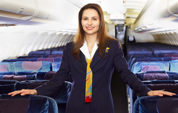

Acerca de nosotros:
SurAmerica Airlines fue fundada el 12 de julio del 2002 en Bogotá Colombia. La aerolínea inició con operaciones básicas como el entrenamiento de pilotos, hasta cuando dos años y medio después adquiere su propio jet para movilizar pasajeros; con el jet que tiene capacidad de 18 personas y ofreciendo con este un servicio privado de transporte de pasajeros entre ciudades locales, la empresa ha logrado adquirir más aviones y cada vez con mayor capacidad, incluyendo lograr adquirir los más modernos aviones, como los A180.
Después de seis años en donde la empresa ha realizado operaciones, se nombra públicamente como SurAmerica Airlines, puesto que inició y actualmente opera su mayor cantidad de vuelos en la zona de sur américa.
Ahora, SurAmerica Airlines cuenta con presencia en la mayoría de países de sur américa y se está expandiendo hacía centro américa y norte américa, para así consolidar aún más la empresa en el sector aéreo.
Actualmente, la aerolínea está innovando y analizando las mejores tecnologías, para luego implementarlas en las operaciones de la empresa. Entre aquellas nuevas tecnologías, se encuentra un nuevo avión supersónico que promete viajes a alta velocidad, y así lograr que la empresa sea más competitiva. Para más información del nuevo avión, puede ver el siguiente vídeo:
Cada vez la aerolínea se vuelve más moderna, y actualmente cuenta con varios portales de comunicación, los cuales son los más modernos actualmente, como son las redes sociales (Facebook, Twitter, Instagram, YouTube, etc.) y otros medios, como los blogs y los canales tradicionales (televisión, periódico y radio). Actualmente, si usted desea comunicarse con la aerolínea, puede usar el siguiente teléfono o dirigirse a la siguiente dirección:
- Teléfono: +57 887 723
- Dirección: Calle #23 - Carrera #18 (Bogotá, Colombia)
Durante este largo proceso de operaciones de 19 años, la aerolínea se ha consolidado en diferentes lugares, entre ellos muchas ciudades capitales de varios países, para así brindar un óptimo servicio, puesto que la aerolínea al estar presente en varios lugares puede gestionar su logística lo más rápido posible. Si desea consultar la ubicación donde SurAmerica Airlines tiene su sede central, puede ver el siguiente mapa:
Finalmente, después de contar con el inicio de la historia de la aerolínea, el proceso de superación y expansión de la misma y últimamente, el proceso de consolidación en el mercado norteamericano, se puede afirmar que SurAmerica Airlines tiene un proceso de construcción sólido en base a un gran conocimiento y en una gran red de comunicación, lo cual permite que la interacción en el sector sea lo más flexible y accesible posible. Desde ahora, damos las gracias a todas las personas y portales de información que han aportado mucho más que suficiente a la construcción de una mejor empresa.